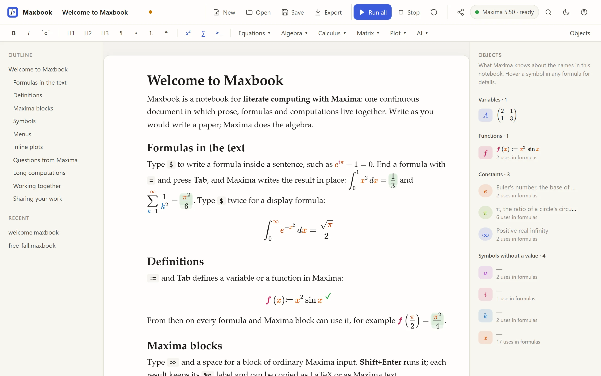

Maxbook
Write mathematics the way you would write a paper, and let Maxima do the algebra. Maxbook is one continuous document in which prose, formulas and computations live together: a modern, free alternative to wxMaxima and TeXmacs for literate computing.

Where to start
Download the single-file program for Windows, macOS or Linux, and install Maxima if you do not have it yet. |
|
A ten-minute, step-by-step tour: text, formulas, a definition, a Maxima block, a plot, saving. |
|
Everything you can type, on one page. |
|
Maxima not found, the window does not open, macOS refuses to start the program… |
Maxbook is free software under the GNU GPL, version 3 or later. It is an independent project, not affiliated with any other notebook or math-editor product; it talks to Maxima as a separate program.